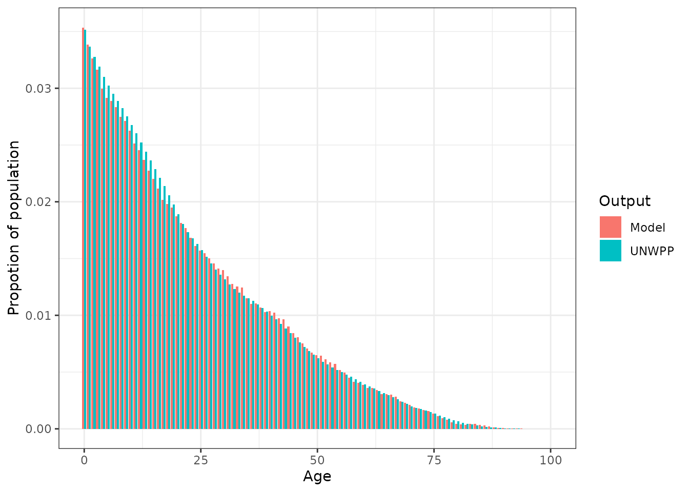

Estimating mortality rates
estimates.Rmd
set.seed(1234)
library(peeps)
library(dplyr)
#>
#> Attaching package: 'dplyr'
#> The following objects are masked from 'package:stats':
#>
#> filter, lag
#> The following objects are masked from 'package:base':
#>
#> intersect, setdiff, setequal, union
library(ggplot2)
library(malariasimulation)Estimating mortatlity rates
The UN WPP produces estimates and projections of life tables and population age distributions.
Life tables include estimates of the probability of death by age-group. However, if we use these directly in malariasimulation, we will not obtain the correct age-distribution in the population. The mortality rates need to be adjusted for the fact that the simulted population in malariasimulation is a constant size.
In the following we detail how to adjust mortality rates inputs accordingly.
Let’s run through an example using the UN WPP mortality rates (qx) and age distribution for Nigeria in 2020.
# Load example data for Nigeria
data("nga_example")
head(nga_example)
#> region iso3c age_lower age_upper qx p
#> 1 Nigeria NGA 0 1 0.07466 0.03514981
#> 2 Nigeria NGA 1 2 0.01176 0.03367905
#> 3 Nigeria NGA 2 3 0.01113 0.03276222
#> 4 Nigeria NGA 3 4 0.01056 0.03188562
#> 5 Nigeria NGA 4 5 0.00995 0.03101934
#> 6 Nigeria NGA 5 6 0.00921 0.03023015
# Plot the target age_distribution
ggplot(nga_example, aes(x = age_lower, y = p)) +
geom_bar(stat = "identity", fill = "darkblue") +
xlab("Age") +
ylab("Propotion of population") +
theme_bw()We can use the elements and the functionality in peeps to create mortatlity rate inputs for a fixed sized simulation population that should re-create the above age-distribution
nga_example$adjusted_mortality_rates <- estimate_mortality_rates(
target_age_distribution = nga_example$p,
starting_mortality_rates = nga_example$qx
)And run a simple simulation to see if it has worked
p <- get_parameters(
overrides = list(
human_population = 10000
)
)
# Age group upper
ages <- round(nga_example$age_upper * 365)
# Rescale the deathrates to be on the daily timestep
deathrates <- rescale_prob(nga_example$adjusted_mortality_rates, 365, 1)
# Create matrix of death rates
deathrates_matrix <- matrix(deathrates, nrow = length(1), byrow = TRUE)
# Add parameters
p <- set_demography(
parameters = p,
agegroups = ages,
timesteps = 0,
deathrates = deathrates_matrix
)
# Set rendering age groups
p$age_group_rendering_min_ages = nga_example$age_lower * 365
p$age_group_rendering_max_ages = nga_example$age_upper * 365
# Run simulation
sim_output <- run_simulation(timesteps = 365 * 10, parameters = p)
# Select the age-outputs
age_output <- sim_output |>
filter(timestep > 365 * 5) |>
select(paste0("n_age_", p$age_group_rendering_min_ages, "_", p$age_group_rendering_max_ages))
# And estimate the proportion in each age group
age_proportion <- colMeans(age_output) / sum(colMeans(age_output))
plot_data <- data.frame(
age = rep(nga_example$age_lower, 2),
Output = rep(c("UNWPP", "Model"), each = nrow(nga_example)),
p = c(nga_example$p, age_proportion)
)
# Plot the comparison of target and modelled age_distribution
ggplot(plot_data, aes(x = age, y = p, fill = Output)) +
geom_bar(stat = "identity", position = "dodge") +
xlab("Age") +
ylab("Propotion of population") +
theme_bw()
Including neonatal mortality
Neonatal mortality (mortality within the first 28 days since birth) can be extremely high. We can include this probability in the inputs mortality rates for malariasimulation.
The (UNICEF estimate)[https://data.unicef.org/topic/child-survival/neonatal-mortality/] of neonatal mortality for Nigeria in 2020 is 0.0355.
neonatal_mortality <- data.frame(
age_lower = 0,
age_upper = 28 / 365,
adjusted_mortality_rates = rescale_prob(0.0355, 28, 365)
)
nga_example2 <- nga_example |>
select(age_lower, age_upper, adjusted_mortality_rates)
nga_example2$age_lower[1] <- 28 / 365
nga_mortality_rates_with_neonatal <- neonatal_mortality |>
bind_rows(nga_example2)
# Age group upper
ages <- round(nga_mortality_rates_with_neonatal$age_upper * 365)
# Rescale the deathrates to be on the daily timestep
deathrates <- rescale_prob(nga_mortality_rates_with_neonatal$adjusted_mortality_rates, 365, 1)
# Create matrix of death rates
deathrates_matrix <- matrix(deathrates, nrow = length(1), byrow = TRUE)
# Add parameters
p <- set_demography(
parameters = p,
agegroups = ages,
timesteps = 0,
deathrates = deathrates_matrix
)
# Set rendering age groups
p$age_group_rendering_min_ages = nga_example$age_lower * 365
p$age_group_rendering_max_ages = nga_example$age_upper * 365
# Run simulation
sim_output <- run_simulation(timesteps = 365 * 10, parameters = p)
# Select the age-outputs
age_output <- sim_output |>
filter(timestep > 365 * 5) |>
select(paste0("n_age_", p$age_group_rendering_min_ages, "_", p$age_group_rendering_max_ages))
# And estimate the proportion in each age group
age_proportion <- colMeans(age_output) / sum(colMeans(age_output))
plot_data <- data.frame(
age = rep(nga_example$age_lower, 2),
Output = rep(c("UNWPP", "Model"), each = nrow(nga_example)),
p = c(nga_example$p, age_proportion)
)
# Plot the comparison of target and modelled age_distribution
ggplot(plot_data, aes(x = age, y = p, fill = Output)) +
geom_bar(stat = "identity", position = "dodge") +
xlab("Age") +
ylab("Propotion of population") +
theme_bw()